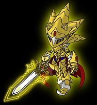
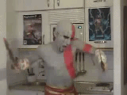

Religión Gamer
 De: La Frikipedia, la enciclopedia extremadamente seria.
De: La Frikipedia, la enciclopedia extremadamente seria.
| De la serie religiones del mundo:
|
| Religión Gamer
|
|
|
| Mantén satisfechos a los dioses o te pisaran
|
|
| Creador
|
Un fontanero con bigote grande, adicto a los hongos y un overol.
|
| Profeta
|
It's me, Mario.
|
| Número de creyentes
|
Todos somos creyentes.
|
| Dogmas fundamentales
|
Vidas infinitas.
|
| No se puede...
|
El Wii Fit y el CoD Black Ops.
|
| Sí se debe...
|
Jugar 10 horas diarias en 3 consolas diferentes.
|
| Promesas principales
|
Dinero infinito y protección legal en 200 reinos diferentes.
|
| Nivel de frikismo
|
Más alto cuanto más lo piensas.
|
| Máximo exponente
|
El hombre que se fue al bosque a hacer Triforce (no Link, el de la vida real).
|
 Para esto son los limosnas en esta
religión, no como en la de zombie judío
En un principio, los frikis respetables se unían a la sagrada familia pastafarista, pues el Dios de esa religión prometía no llevarlos a morir hervidos en una imitación de restaurante italiano si le pagaban una cómoda cuota a la mafia siciliana, pero algunos vieron que ese método de vida no tenia fundamentos y los llevaría a la destrucción, así que obedecieron los deseos de su corazón y confiaron que alguien vendría a iluminarlos. Despues de 10 años de espera y 12 sesiones del KKK decidieron buscar su propio camino y fundaron la adoración gamer.
La mayor razón de esta religión es la premisa de que 20000 horas de material audiovisual que viene desde los 80 hacen muy buen papel de libro santo. Esta religión es politeista y muchos de los detractores de este sagrado camino (principalmente comunistas nazis y fanáticos de crepúsculo) aprovechan para decir que la cantidad de deidades de esta religión es absurda, pero los conteos mas reciente solo llegan a los 30 dioses sin incluir a los demonios.
Deidades
Siendo esta la típica religión de la gente indecisa, eligió ser politeista y asignarle a cada dios un campo de la vida cotidiana, como lo hacen los hindúes o los griegos antes de la crisis. Cada dios cuenta con un templo principal y varios adoradores estúpidos alrededor del mundo que le van construyendo iglesias mas feas para que no opaquen al templo principal como paso con La Santa Sede y el Vicente Calderon. Para poder comunicarse con los dioses, cada señor divino pide una ofrenda particular que puede ser fácil o difícil de conseguir dependiendo de cuanta pasta tengas en el bolsillo, porque a diferencia de otras religiones a esta no le gusta la gente pobre.
- Dios de: Los otros dioses y las tuberías de la tierra, también sobre todo lo italiano.
- Templo principal: The Mushroom Sanctorum ubicado en las alcantarillas del barrio italiano neoyorkino.
- Ofrenda Apropiada: Una pizza de setas acompañada de una bolsa de monedas de 25 centavos.
- Principales Hazañas: Haber aplastado a todos los otros personajes de videojuegos a punta de saltos irreales, enfrentar ejercitos de animales que no hacen lo que la evolución les ordena y tener la paciencia para aguantar que 7 toads distintos le vacilen con eso de "la princesa esta en otro castillo".
- Dios de: La velocidad y las esmeraldas radioactivas.
- Templo principal: El gran aro dorado que flota sobre la mitad del atlántico.
- Ofrenda Apropiada: Una Hot Dog con picante o esmeraldas robadas a científicos.
- Principales Hazañas: Ser el único que aguanto un duelo con Mario porn mas de 10 años hasta que Sega hizo movimientos economicos desastrosos y no le permitieron tener un bastión propio para tener el duelo.
- Dios de: Los triángulos, las espadas y la gente muda.
- Templo principal: Una institución para niños sordomudos que queda en la mitad de un bosque donde nunca creceran.
- Ofrenda Apropiada: Muchas rupias o en su defecto algo que diga "Joya cutre del Valor".
- Principales Hazañas: Vence a monstruos mas grandes y mas temibles que los 2 anteriores, es disciplinado en el manejo de las espadas, arcos y la magia... pero como llegues a pedirle que hable se transforma en la fiera deidad y te aplastara con la luna durante 3 ciclos solares (días).
 Los seguidores de Kratos no son ... los mejores guerreros
- Dios de: La guerra, el arte de cortar a la gente por la mitad y ¡ESPARTA!.
- Templo principal: Una pila de 1000 cadáveres, preferiblemente de hombres que tengan esposa e hijos .
- Ofrenda Apropiada: Una pila de 1000 cadáveres, preferiblemente de hombres que tengan esposa e hijos.
- Principales Hazañas: Hacer Una pila de 1000 cadáveres, principalmente de hombres que tengan esposa e hijos (este dios se caracteriza por haber olvidado la variedad y la creatividad en la casa, pensar es para la gente débil). También puede eliminar a la competencia en los balcanes por motivos que a nadie le importan.
- Dios de: el espacio y de la gente tímida y sin rostro.
- Templo principal: Naves vacías y semi-destruidas que vagan por el espacio, donde puede quitarse el casco sin que le vean y coquetear con hologramas
- Ofrenda Apropiada: Le molan las IA (Inteligencia Artificial) cachondas y con severos trastornos de personalidad.(son mas fáciles de seducir)
- Principales Hazañas: Destruye, rompe, desintegra volatiliza e inutiliza cualquier tipo de arma, planeta o vida extraterrestre, es famoso por su aficción a hacer puenting (sin cuerda) desde naves espaciales en órbita a cualquier planeta.
- Dios de: Las peleas y las secuencias de botones.
- Templo principal: Un templo japones donde hay mucha gente dándose hostias, pero el tipo siempre viaja en avión así que el aeropuerto de Barajas también vale.
- Ofrenda Apropiada: La gorra militar de un comandante tailandes que tenga ganas de conquistar el mundo, o el vestido del hermano gemelo malvado de tu maestro de artes marciales.
- Principales Hazañas: Ser el mejor luchador de un grupo de estereotipos que incluyen al norteamericano imitando a los asiaticos, el torero ninja que baila con sevillanas, el luchador de sumo japones y la china que busca venganza. Su orgullo también es muy poderoso, tanto que sobrevivio al horrendo impacto de ver una mala imitación de su historia protagonizada por Jan Clod Van-Camps interpretando a Guille y otro coreano de relleno haciendo el papel de Ryu.
- Dios de: La comida, la cocina y todo lo que se pueda meter a la boca.
- Templo principal: Un restaurante vasco, porque solo allá hay suficiente comida para el, también tenemos una fabrica de globos de helio con sede en los alpes suizos.
- Ofrenda Apropiada: Un Kit Kat tamaño adulto del país vasco, o en su defecto la cosecha entera de cualquier otro sitio.
- Principales Hazañas: Comerse a los otros dioses para poder imitar sus habilidades y así poder conquistar el mundo, también se dedica a volar en una nave que sabe Dios de donde saco y por ultimo puede resistirse a la gravedad mas que cualquier otra deidad de otras religiones (exceptuando a Buda, que tiene superpoderes).
Red (no el atarantado de Ash)

Red ayuda a sus feligreses en momentos críticos
- Dios de: Hacer que otras especies peleen eternamente entre si para aumentar la amistad con los seres que inducen esas peleas.
- Templo principal:
Pueblo Paleto Una feria de frikis otakus en San Diego, aunque en su honor varia gente hace lugares conocidos como Galleras y Plazas de Toros (por ser dibujos no son menos sangrientos) .
- Ofrenda Apropiada: 3 Ultrapociones, 1 Master Ball, 4 Cura Todo y 1 Limonada.
- Principales Hazañas: La primera es lograr que el Profesor Oak distinga que es un hombre, luego esta vivir en una dimensión donde ganas dinero por matar bichos de otras personas y el sistema de salud sea gratuito, así como la vivienda. El problema es que una limonada cuesta 350 dolares y tu madre tiene que vivir en la cocina porque tu casa solo tiene 2 habitaciones (y para colmo tu la dejas libre pero tu madre todavía vive en la cocina).
Frikipedia 2005-2016, Licencia
GFDL 1.2 - Extraído por FrikiLeaks